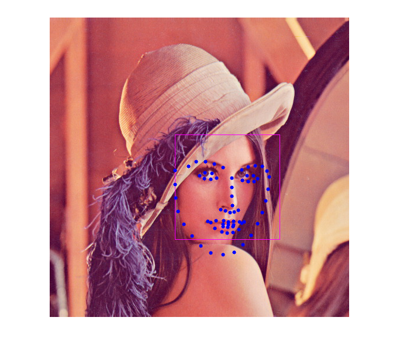

Facemark LBF training demo
The user should provides the list of training images accompanied by their corresponding landmarks location in separate files.
See below for a description of file formats.
Examples of datasets are available at https://ibug.doc.ic.ac.uk/resources/facial-point-annotations/.
Sources:
Contents
Preparation
Before you continue with this tutorial, you should download a training dataset of facial landmarks detection.
We suggest you to download the IBUG dataset which can be retrieved at https://ibug.doc.ic.ac.uk/download/annotations/ibug.zip
First thing to do is to make two text files containing the list of image files and annotation files respectively. Make sure that the order of images and annotations in both files are matched. Furthermore, it is advised to use absolute paths instead of relative paths.
Example to make the file list in Linux machine:
ls /data/ibug/*.jpg > images.txt ls /data/ibug/*.pts > annotations.txt
Example of content in the images.txt file:
/data/ibug/image_003_1.jpg /data/ibug/image_004_1.jpg /data/ibug/image_005_1.jpg ...
Example of content in the annotations.txt file:
/data/ibug/image_003_1.pts /data/ibug/image_004_1.pts /data/ibug/image_005_1.pts ...
where a .pts file contains the position of each face landmark. Make sure that the annotation format is supported by the API, where the contents should look like the following snippet:
version: 1
n_points: 68
{
212.716603 499.771793
230.232816 566.290071
...
}Once trained, we show how to use the model to detect face landmarks in a test image.
You can also download a pre-trained model in this link https://raw.githubusercontent.com/kurnianggoro/GSOC2017/master/data/lbfmodel.yaml (that way you can skip training and simply load the model).
Options
% [INPUT] path of a text file contains the list of paths to all training images imgList = fullfile(mexopencv.root(),'test','facemark','lfpw','images.lst'); assert(exist(imgList, 'file') == 2, 'missing images list file'); % [INPUT] path of a text file contains the list of paths to all annotations files ptsList = fullfile(mexopencv.root(),'test','facemark','lfpw','annotations.lst'); assert(exist(ptsList, 'file') == 2, 'missing annotations list file'); % [OUTPUT] path for saving the trained model modelFile = fullfile(tempdir(), 'model_lbf.yaml'); % [INPUT] path to the cascade xml file for the face detector xmlFace = fullfile(mexopencv.root(),'test','lbpcascade_frontalface.xml'); download_classifier_xml(xmlFace); % name of user-defined face detector function faceDetectFcn = 'myFaceDetector'; assert(exist([faceDetectFcn '.m'], 'file') == 2, 'missing face detect function'); % path to test image testImg = fullfile(mexopencv.root(),'test','lena.jpg');
Init
create the facemark instance
obj = cv.Facemark('LBF', 'NLandmarks',68, 'CascadeFace',xmlFace, ... 'ModelFilename',modelFile, 'SaveModel',true, 'Verbose',true);
set user-defined face detector
obj.setFaceDetector(faceDetectFcn);
Data
load the dataset, and add training samples one-by-one
disp('Loading data...') [imgFiles, ptsFiles] = cv.Facemark.loadDatasetList(imgList, ptsList); for i=1:numel(imgFiles) % load image and its corresponding annotation data, then add pair img = cv.imread(imgFiles{i}); pts = cv.Facemark.loadFacePoints(ptsFiles{i}); obj.addTrainingSample(img, pts); end
Loading data...
Train
train the algorithm, model will be saved to specified file
disp('Training...')
tic
obj.training();
tocTraining... Elapsed time is 107.133092 seconds.
Test
run on some test image
img = cv.imread(testImg); faces = obj.getFaces(img); landmarks = obj.fit(img, faces); for i=1:numel(faces) img = cv.rectangle(img, faces{i}, 'Color',[255 0 255]); img = cv.Facemark.drawFacemarks(img, landmarks{i}, 'Color',[0 0 255]); end imshow(img)
Helper functions
function download_classifier_xml(fname) if exist(fname, 'file') ~= 2 % attempt to download trained Haar/LBP/HOG classifier from Github url = 'https://cdn.rawgit.com/opencv/opencv/3.4.0/data/'; [~, f, ext] = fileparts(fname); if strncmpi(f, 'haarcascade_', length('haarcascade_')) url = [url, 'haarcascades/']; elseif strncmpi(f, 'lbpcascade_', length('lbpcascade_')) url = [url, 'lbpcascades/']; elseif strncmpi(f, 'hogcascade_', length('hogcascade_')) url = [url, 'hogcascades/']; else error('File not found'); end urlwrite([url f ext], fname); end end % The facemark API provides the functionality to the user to use their own % face detector. The code below implements a sample face detector. This % function must be saved in its own M-function to be used by the facemark API. function faces = myFaceDetector(img) persistent obj if isempty(obj) obj = cv.CascadeClassifier(); obj.load(xmlFace); end if size(img,3) > 1 gray = cv.cvtColor(img, 'RGB2GRAY'); else gray = img; end gray = cv.equalizeHist(gray); faces = obj.detect(gray, 'ScaleFactor',1.4, 'MinNeighbors',2, ... 'ScaleImage',true, 'MinSize',[30 30]); end